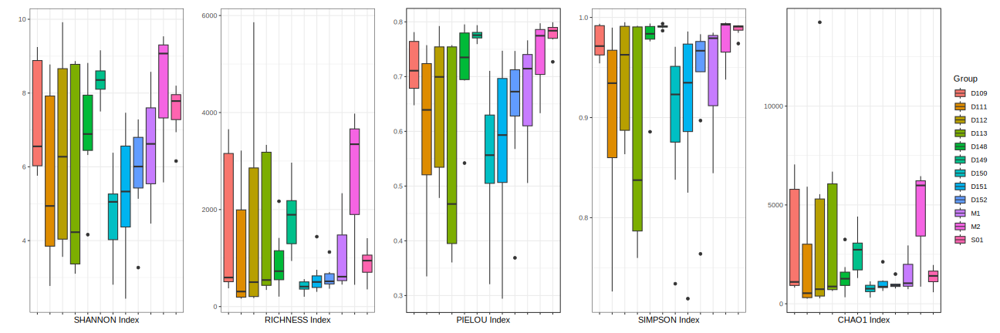

α多样性
Alpha多样性（α多样性）是指在特定生境或生态系统内部的物种多样性。它通常包括两个方面：物种丰富度（种类的数量）和物种均匀度（物种分布的均匀性）。α多样性的测量可以帮助我们了解一个生态系统的复杂性和生物群落的健康状况。
以下是一些常用的α多样性指数及其作用和异同：
Shannon指数:
- 综合考虑了物种的丰富度和均匀度。
- 值越高，表明群落的多样性越高。
- 计算公式为 \(H = -\sum (p_i \ln p_i)\)，其中\(( p_i )\)是第\(i\)个物种的相对丰度。
Richness:
- 简单地衡量生态群落中物种的数量。
- 不考虑物种的丰度或其分布。
Pielou均匀度指数:
- 衡量物种分布均匀度的指标。
- 计算公式为 \(E = H / \ln(S)\)，其中\(H\)是Shannon指数，\(S\)是物种数。
Simpson指数:
衡量物种丰富度，但考虑物种的丰度权重。
值越大，多样性越低（因为它实际上计算的是均匀度的倒数）。
计算公式为 \(D=∑(n_i/N)^2\)
，其中( n_i )是第i个物种的个体数，N是群落中个体的总数。
Chao1指数:
- 估计群落中未被观察到的物种丰富度。
- 特别适用于样本中有很多稀有物种的情况。
这些指数的主要区别在于它们考虑的多样性方面不同。例如，Shannon和Simpson指数都考虑了物种的丰富度和均匀度，但Shannon更强调均匀度，而Simpson更强调丰富度。Pielou均匀度指数专注于物种分布的均匀性，而Chao1则用于估计可能未被检测到的物种的数量。这些指数通常结合使用，以提供关于生态群落多样性的更全面的视图。
通过下列代码可以绘制α多样性相关指数图：
alpha_group.rrm(list = ls()) ## 加载必要的包 library(vegan) library(ggplot2) library(reshape2) library(patchwork) ## 读入数据并进行转置 otu <- read.table("final_resample_otu_table_sediment_taxa.csv", sep = ",", header = TRUE, row.names = 1) otu <- otu[ , -ncol(otu)] # 移除taxa列 otu <- t(otu) ## 假设每个样本的组信息存储在数据行名中 groups <- sub("_.*", "", rownames(otu)) # 从行名中提取组信息，例如 "D151_2" -> "D151" ## 计算丰富度、Shannon 指数、Simpson 指数、Pielou 均匀度、Chao1 指数、ACE 指数、goods_coverage 指数 alpha <- function(x, base = exp(1)) { est <- estimateR(x) Richness <- est[1, ] Chao1 <- est[2, ] ACE <- est[4, ] Shannon <- diversity(x, index = "shannon", base = base) Simpson <- diversity(x, index = "simpson") Pielou <- Shannon / log(Richness, base) goods_coverage <- 1 - rowSums(x == 1) / rowSums(x) result <- data.frame(SITE = rownames(x), GROUP = groups, Richness, Shannon, Simpson, Pielou, Chao1, ACE, goods_coverage) colnames(result) <- c("SITE", "GROUP", "RICHNESS", "SHANNON", "SIMPSON", "PIELOU", "CHAO1", "ACE", "GOODS_COVERAGE") result } alpha_all <- alpha(otu, base = 2) ## 保存为 CSV 文件 write.csv(alpha_all, file = "alpha_all.csv", row.names = FALSE, quote = FALSE) ## 绘制各指数箱线图 indices <- c("SHANNON", "RICHNESS", "PIELOU", "SIMPSON", "CHAO1") # 创建一个空列表来存储图形对象 plots <- list() # 使用循环创建每个指数的箱线图 for (i in seq_along(indices)) { index <- indices[i] data_melted <- melt(alpha_all, id.vars = c("GROUP", "SITE"), measure.vars = index) colnames(data_melted)[which(colnames(data_melted) == "value")] <- "value" p <- ggplot(data_melted, aes(x = GROUP, y = value, fill = GROUP)) + geom_boxplot() + labs(x = paste(index, "Index"), y = "") + theme_bw() + theme(axis.text.x = element_blank()) if (i == length(indices)) { p <- p + labs(fill = "Group") # 仅在最后一个图表上添加图例 } else { p <- p + guides(fill = FALSE) # 隐藏其余图表的图例 } plots[[index]] <- p } # 使用patchwork将所有图表组合成一个1行5列的布局 p_combined <- wrap_plots(plots, ncol = 5) # 保存图像 ggsave(paste0('alpha_all_', "Alpha_Diversity", '.svg'), p_combined, width = 6 * 0.6 * 5, height = 6)
其中，alpha_all.csv的格式如：
alpha_all.csvSITE GROUP RICHNESS SHANNON SIMPSON PIELOU CHAO1 ACE GOODS_COVERAGE D151_2 Raw 456 5.985928225 0.966626149 0.677686263 908.7631579 921.6164037 0.994927596
结果图：

β多样性
基于OTU表
PCOA_bray&jaccard.Rlibrary(vegan) library(ape) library(ggplot2) library(grid) library(ggalt) library(dplyr) library(multcomp) library(patchwork) library(xlsx) rm(list = ls()) galaxy <- "33" method <-"jaccard" #https://rdocumentation.org/packages/vegan/versions/2.6-4/topics/vegdist #bray jaccard groups <- read.xlsx2("Group3233.xlsx", sheetName =galaxy, row.names=1) Legend_column <- "Group" #分组依据是csv中的哪一列 output_url <- paste0("Galaxy",galaxy,"-PCoA-",method) data = read.table(paste0("Galaxy",galaxy,".csv"), header=T, row.names=1, sep=",") data=t(data)#每行为一个样品 #在otu和gp中删除Legend_column为空的行 # empty_rows <- which( (is.na(groups[[paste0(Legend_column)]])) | (groups[[paste0(Legend_column)]]=="") ) # groups <- groups[-empty_rows,] # data <- data[-empty_rows,] # rm(empty_rows) # groups=subset(groups, select = c(paste0(Legend_column),"Mark"))#只保留所需列 #只保留某些mark，此段代码选择启用 # rows <- c("G52","C52","Raw") # remain_rows <- which( groups[["Mark"]] %in% rows ) # groups <- groups[remain_rows,] # data <- data[remain_rows,] # rm(remain_rows) length=nrow(groups) times1=length res1=length times2=length res2=length col1=rep(1:8,times1) col=c(col1,1:res1) pich1=rep(c(21:24),times2) pich=c(pich1,15:(15+res2)) data <- vegdist(data, method = method) pcoa<- pcoa(data, correction = "none", rn = NULL) PC1 = pcoa$vectors[,1] PC2 = pcoa$vectors[,2] plotdata <- data.frame(rownames(pcoa$vectors),PC1,PC2,groups) colnames(plotdata)[1:3] <-c("sample","PC1","PC2") #重命名1~3列 names(plotdata)[names(plotdata) == paste0(Legend_column)] <- 'Group' #重命Group列 pc1 <-floor(pcoa$values$Relative_eig[1]*100) pc2 <-floor(pcoa$values$Relative_eig[2]*100) plotdata$Group <- factor(plotdata$Group) yf <- plotdata yd1 <- yf %>% group_by(Group) %>% summarise(Max = max(PC1)) yd2 <- yf %>% group_by(Group) %>% summarise(Max = max(PC2)) yd1$Max <- yd1$Max + max(yd1$Max)*0.1 yd2$Max <- yd2$Max + max(yd2$Max)*0.1 fit1 <- aov(PC1~Group,data = plotdata) tuk1<-glht(fit1,linfct=mcp(Group="Tukey")) res1 <- cld(tuk1,alpah=0.05) fit2 <- aov(PC2~Group,data = plotdata) tuk2<-glht(fit2,linfct=mcp(Group="Tukey")) res2 <- cld(tuk2,alpah=0.05) test <- data.frame(PC1 = res1$mcletters$Letters,PC2 = res2$mcletters$Letters, yd1 = yd1$Max,yd2 = yd2$Max,Group = yd1$Group) test$Group <- factor(test$Group) p1 <- ggplot(plotdata,aes(Group,PC1)) + geom_boxplot(aes(fill = Group)) + geom_text(data = test,aes(x = Group,y = yd1,label = PC1),size = 7) + coord_flip() + theme_bw()+ theme(axis.ticks.length = unit(.4,"lines"), axis.title.x=element_blank(), axis.title.y=element_blank(), axis.text.y=element_text(size=15), axis.text.x=element_blank(), legend.position = "none") yrange <- ggplot_build(p1)$layout$panel_scales_y[[1]]$range$range p1 p3 <- ggplot(plotdata,aes(Group,PC2)) + geom_boxplot(aes(fill = Group)) + geom_text(data = test,aes(x = Group,y = yd2,label = PC2), size = 7,color = "black",fontface = "bold") + theme_bw()+ theme(axis.ticks.length = unit(0.4,"lines"), axis.ticks = element_line(color='black'), axis.line = element_line(colour = "black"), axis.title.x=element_blank(), axis.title.y=element_blank(), axis.text.x=element_text(colour='black',size=15,angle = 45, vjust = 1,hjust = 1), axis.text.y=element_blank(), legend.position = "none") yrange <- ggplot_build(p3)$layout$panel_scales_y[[1]]$range$range p3 <- p3 p3 p2<-ggplot(plotdata, aes(PC1, PC2)) + geom_encircle(aes(fill=Group,colour=Group),alpha=.1, show.legend=F,size=2,expand=0.05)+ #同组阴影底色 #stat_ellipse(level=.6,aes(colour=Group))+ #画置信圈,alpha是透明度 geom_point(aes(fill=Group,colour=Group),size=5,pch =21, stroke=2, alpha=.8)+ #点 #geom_text(aes(label = Mark), size = 3)+ xlab(paste0("PC1 ( ",pc1,"%"," )")) + ylab(paste0("PC2 ( ",pc2,"%"," )"))+ xlim(ggplot_build(p1)$layout$panel_scales_y[[1]]$range$range) + ylim(ggplot_build(p3)$layout$panel_scales_y[[1]]$range$range) + theme(text=element_text(size=18))+ geom_vline(aes(xintercept = 0),linetype="dotted")+ geom_hline(aes(yintercept = 0),linetype="dotted")+ theme_classic()+ theme(axis.ticks.length = unit(0.4,"lines"), axis.ticks = element_line(color='black'), axis.line = element_line(colour = "black"), axis.title.x=element_text(colour='black', size=18,vjust=3), axis.title.y=element_text(colour='black', size=18,vjust=-1), axis.text=element_text(colour='black',size=14), legend.title=element_text(size = 14), legend.text=element_text(size=12), legend.key=element_blank(),legend.position = c(1, 1),legend.justification = c(1,1), legend.background = element_rect(colour = "black",fill=alpha("white",0.4)), ) p2 otu.adonis=adonis2(data~groups[[paste0(Legend_column)]],data = groups,distance = method) p4 <- ggplot(plotdata, aes(PC1, PC2)) + geom_text(aes(x = -0.5,y = 0.6,label = paste(output_url,"\ndf = ",otu.adonis$Df[1], "\nR² = ",round(otu.adonis$R2[1],4), "\nP-value = ",otu.adonis$`Pr(>F)`[1],sep = "")), size = 5,family="serif") + theme_bw() + xlab("") + ylab("") + theme(panel.grid=element_blank(), axis.title = element_blank(), axis.line = element_blank(), axis.ticks = element_blank(), axis.text = element_blank()) p4 p5 <- p1 + p4 + p2 + p3 + plot_layout(heights = c(1,4),widths = c(4,1),ncol = 2,nrow = 2) p5 # info <- paste0("【数据】选用",unlist(strsplit(data_url, "-"))[1],"压强为",paste(unique(groups$Pressure),collapse ="、"),"第",paste(unique(groups$Generation),collapse ="、"),"代，营养浓度",paste(unique(groups$Nutrition),collapse ="、"),"的数据样本。\n","【结论】",Legend_column,"对于本样本有一定影响。","\n【说明】P值<0.05时说明不同组间差异显著。R²越大说明分组对差异的解释度越高。\n\tGalaxy32使用UPARSE方法，Galaxy33使用DADA2方法。") # library(showtext) # library(Cairo) # library(stringr) # font_add("STSong","STSONG.TTF") # showtext_auto(enable=T) # p2 <- p2+labs(caption = info)+ # theme(plot.caption = element_text(size=15, family="STSong",hjust=0,vjust=3,lineheight=1.25)) # p2 # p5 <- p1 + p4 + p2 + p3 + # plot_layout(heights = c(1,4),widths = c(4,1),ncol = 2,nrow = 2) # p5 ggsave(paste0(output_url,'.pdf'), p5, width = 12, height =12/sqrt(2)) print ("end")
nmds_bray&jaccard.Rlibrary(vegan) library(ape) library(ggplot2) library(grid) library(ggalt) library(dplyr) library(multcomp) library(patchwork) library(xlsx) rm(list = ls()) galaxy <- "33" method <-"jaccard" #https://rdocumentation.org/packages/vegan/versions/2.6-4/topics/vegdist #bray jaccard groups <- read.xlsx2("Group3233.xlsx", sheetName =galaxy, row.names=1) Legend_column <- "Group" #分组依据是csv中的哪一列 output_url <- paste0("Galaxy",galaxy,"-NMDS-",method) data = read.table(paste0("Galaxy",galaxy,".csv"), header=T, row.names=1, sep=",") data=t(data)#每行为一个样品 #在otu和gp中删除Legend_column为空的行 # empty_rows <- which( (is.na(groups[[paste0(Legend_column)]])) | (groups[[paste0(Legend_column)]]=="") ) # groups <- groups[-empty_rows,] # data <- data[-empty_rows,] # rm(empty_rows) # groups=subset(groups, select = c(paste0(Legend_column),"Mark"))#只保留所需列 #只保留某些mark，此段代码选择启用 # rows <- c("G52","C52","Raw") # remain_rows <- which( groups[["Mark"]] %in% rows ) # groups <- groups[remain_rows,] # data <- data[remain_rows,] # rm(remain_rows) data <- vegdist(data, method = method) nmds <- metaMDS(data, distance = method, k = 2) NMDS1 = nmds$points[,1] NMDS2 = nmds$points[,2] # 创建包含NMDS坐标和分组信息的数据框架 plotdata <- data.frame(sample=rownames(nmds$points), NMDS1, NMDS2, groups) colnames(plotdata)[1:3] <- c("sample","NMDS1","NMDS2") # 重命名1~3列 names(plotdata)[names(plotdata) == paste0(Legend_column)] <- 'Group' # 重命Group列 plotdata$Group <- factor(plotdata$Group) p1 <- ggplot(plotdata, aes(Group, NMDS1)) + geom_boxplot(aes(fill = Group)) + coord_flip() + theme_bw() + theme(axis.ticks.length = unit(.4,"lines"), axis.title.x=element_blank(), axis.title.y=element_blank(), axis.text.y=element_text(size=15), axis.text.x=element_blank(), legend.position = "none") p1 p3 <- ggplot(plotdata, aes(Group, NMDS2)) + geom_boxplot(aes(fill = Group)) + theme_bw() + theme(axis.ticks.length = unit(0.4,"lines"), axis.ticks = element_line(color='black'), axis.line = element_line(colour = "black"), axis.title.x=element_blank(), axis.title.y=element_blank(), axis.text.x=element_text(colour='black',size=15,angle = 45, vjust = 1,hjust = 1), axis.text.y=element_blank(), legend.position = "none") p3 p2 <- ggplot(plotdata, aes(NMDS1, NMDS2)) + geom_point(aes(fill=Group,color=Group), size=5, pch = 21, stroke=2, alpha=.8) + #geom_encircle(aes(fill=sample_data(ps)$Group,colour=sample_data(ps)$Group),alpha=.1, show.legend=F,size=2,expand=0.05)+ #同组阴影底色 stat_ellipse(level=.8,aes(colour=Group))+ #画置信圈,alpha是透明度 xlab("NMDS 1") + ylab("NMDS 2") + theme_classic() + theme(axis.ticks.length = unit(0.4,"lines"), axis.ticks = element_line(color='black'), axis.line = element_line(colour = "black"), axis.title.x=element_text(colour='black', size=18,vjust=3), axis.title.y=element_text(colour='black', size=18,vjust=-1), axis.text=element_text(colour='black',size=14), legend.title=element_text(size = 14), legend.text=element_text(size=12), legend.key=element_blank(),legend.position = c(1, 1),legend.justification = c(1,1), legend.background = element_rect(colour = "black",fill=alpha("white",0.4)), ) p2 otu.adonis <- adonis2(data ~ groups[[paste0(Legend_column)]], data = groups, distance = method) p4 <- ggplot(plotdata, aes(PC1, PC2)) + geom_text(aes(x = -0.5,y = 0.6,label = paste(output_url,"\ndf = ",otu.adonis$Df[1], "\nR² = ",round(otu.adonis$R2[1],4), "\nP-value = ",otu.adonis$`Pr(>F)`[1],sep = "")), size = 5,family="serif") + theme_bw() + xlab("") + ylab("") + theme(panel.grid=element_blank(), axis.title = element_blank(), axis.line = element_blank(), axis.ticks = element_blank(), axis.text = element_blank()) p4 p5 <- p1 + p4 + p2 + p3 + plot_layout(heights = c(1,4),widths = c(4,1),ncol = 2,nrow = 2) p5 # info <- paste0("【数据】选用",unlist(strsplit(data_url, "-"))[1],"压强为",paste(unique(groups$Pressure),collapse ="、"),"第",paste(unique(groups$Generation),collapse ="、"),"代，营养浓度",paste(unique(groups$Nutrition),collapse ="、"),"的数据样本。\n","【结论】",Legend_column,"对于本样本有一定影响。","\n【说明】P值<0.05时说明不同组间差异显著。R²越大说明分组对差异的解释度越高。\n\tGalaxy32使用UPARSE方法，Galaxy33使用DADA2方法。") # library(showtext) # library(Cairo) # library(stringr) # font_add("STSong","STSONG.TTF") # showtext_auto(enable=T) # p2 <- p2+labs(caption = info)+ # theme(plot.caption = element_text(size=15, family="STSong",hjust=0,vjust=3,lineheight=1.25)) # p2 # p5 <- p1 + p4 + p2 + p3 + # plot_layout(heights = c(1,4),widths = c(4,1),ncol = 2,nrow = 2) # p5 ggsave(paste0(output_url,'.pdf'), p5, width = 12, height =12/sqrt(2)) print ("end")
基于系统发生树
nmds_unifrac.Rrm(list = ls()) library(phyloseq) library(vegan) library(ggalt) library(ggplot2) library(ape) library(xlsx) library(patchwork) tree <- read.tree("G33-Galaxy51-[FastTree.nwk].nwk") # 读取分组文件 Group <- read.xlsx2("Group3233.xlsx", sheetName ="33", row.names=1) # 读取物种丰度表，假设文件名为otu_table.csv otu_url <- "Galaxy33-[DADA2_OTU_table].csv" otu <- read.csv(otu_url, row.names = 1) method <- "wunifrac" #wunifrac unifrac output_url<-paste0(unlist(strsplit(otu_url, "-"))[1],"-NMDS-",method) # 构建phyloseq对象 ps <- phyloseq(otu_table(as.matrix(otu), taxa_are_rows = TRUE), sample_data(Group), phy_tree(tree)) # 从phyloseq对象中提取元数据 meta <- as.data.frame(sample_data(ps)) # 计算加权UniFrac距离矩阵 dist_matrix <- as.matrix(distance(ps, method = method)) # 计算NMDS nmds <- metaMDS(dist_matrix, distance = method, k = 2) # 将NMDS结果转换为数据框架 nmds_df <- as.data.frame(nmds$points) meta <- as.data.frame(sample_data(ps)) otu.adonis <- adonis2(dist_matrix ~ Group, data=Group) NMDS1 = nmds$points[,1] NMDS2 = nmds$points[,2] plotdata <- data.frame(sample=rownames(nmds$points), NMDS1, NMDS2, Group=meta$Group) plotdata$Group <- factor(plotdata$Group) # 确保分组变量是因子类型 p1 <- ggplot(plotdata,aes(Group,NMDS1)) + geom_boxplot(aes(fill = Group)) + coord_flip() + theme_bw()+ theme(axis.ticks.length = unit(.4,"lines"), axis.title.x=element_blank(), axis.title.y=element_blank(), axis.text.y=element_text(size=15), axis.text.x=element_blank(), legend.position = "none") yrange <- ggplot_build(p1)$layout$panel_scales_y[[1]]$range$range p1 p3 <- ggplot(plotdata,aes(Group,NMDS2)) + geom_boxplot(aes(fill = Group)) + theme_bw()+ theme(axis.ticks.length = unit(0.4,"lines"), axis.ticks = element_line(color='black'), axis.line = element_line(colour = "black"), axis.title.x=element_blank(), axis.title.y=element_blank(), axis.text.x=element_text(colour='black',size=15,angle = 45, vjust = 1,hjust = 1), axis.text.y=element_blank(), legend.position = "none") yrange <- ggplot_build(p3)$layout$panel_scales_y[[1]]$range$range p3 # 使用ggplot2包进行绘图 p2<-ggplot(nmds_df, aes(MDS1, MDS2, color = meta$Group)) + labs(color = "Group",fill="Group")+ #geom_encircle(aes(fill=sample_data(ps)$Group,colour=sample_data(ps)$Group),alpha=.1, show.legend=F,size=2,expand=0.05)+ #同组阴影底色 stat_ellipse(level=.8,aes(colour=sample_data(ps)$Group))+ #画置信圈,alpha是透明度 geom_point(aes(fill=sample_data(ps)$Group,colour=sample_data(ps)$Group),size=5,pch =21, stroke=2, alpha=.8)+ #点 #geom_text(aes(label = Mark), size = 3)+ xlab("NMDS 1") + ylab("NMDS 2")+ xlim(ggplot_build(p1)$layout$panel_scales_y[[1]]$range$range) + ylim(ggplot_build(p3)$layout$panel_scales_y[[1]]$range$range) + theme(text=element_text(size=18))+ geom_vline(aes(xintercept = 0),linetype="dotted")+ geom_hline(aes(yintercept = 0),linetype="dotted")+ theme_classic()+ theme(axis.ticks.length = unit(0.4,"lines"), axis.ticks = element_line(color='black'), axis.line = element_line(colour = "black"), axis.title.x=element_text(colour='black', size=18,vjust=3), axis.title.y=element_text(colour='black', size=18,vjust=-1), axis.text=element_text(colour='black',size=14), legend.title=element_text(size = 14), legend.text=element_text(size=12), legend.key=element_blank(),legend.position = c(1, 1),legend.justification = c(1,1), legend.background = element_rect(colour = "black",fill=alpha("white",0.4)), ) p2 p4 <- ggplot(plotdata, aes(PC1, PC2)) + geom_text(aes(x = -0.5,y = 0.6,label = paste0(output_url,"\ndf = ",otu.adonis$Df[1], "\nR² = ",round(otu.adonis$R2[1],4), "\nP-value = ",otu.adonis$`Pr(>F)`[1],sep = "")), size = 4.5,family="serif") + theme_bw() + xlab("") + ylab("") + theme(panel.grid=element_blank(), axis.title = element_blank(), axis.line = element_blank(), axis.ticks = element_blank(), axis.text = element_blank()) p4 p5 <- p1 + p4 + p2 + p3 + plot_layout(heights = c(1,4),widths = c(4,1),ncol = 2,nrow = 2) p5 ggsave(paste0("output/",output_url,".pdf"), p5, width = 12, height =12/sqrt(2)) print ("end")
pcoa_unifrac.Rrm(list = ls()) library(phyloseq) library(vegan) library(ggalt) library(ggplot2) library(ape) library(xlsx) library(patchwork) tree <- read.tree("G33-Galaxy51-[FastTree.nwk].nwk") # 读取分组文件 Group <- read.xlsx2("Group3233.xlsx", sheetName ="33", row.names=1) # 读取物种丰度表，假设文件名为otu_table.csv otu_url <- "Galaxy33-[DADA2_OTU_table].csv" otu <- read.csv(otu_url, row.names = 1) method <- "unifrac" output_url<-paste0(unlist(strsplit(otu_url, "-"))[1],"-PCoA-",method) # 构建phyloseq对象 ps <- phyloseq(otu_table(as.matrix(otu), taxa_are_rows = TRUE), sample_data(Group), phy_tree(tree)) # 计算PCoA pcoa <- ordinate(ps, method = "PCoA", distance = method) PC1 = pcoa$vectors[,1] PC2 = pcoa$vectors[,2] plotdata <- data.frame(rownames(pcoa$vectors),PC1,PC2,Group) colnames(plotdata)[1:4] <-c("sample","PC1","PC2","Group") #重命名1~3列 pc1 <-floor(pcoa$values$Relative_eig[1]*100) pc2 <-floor(pcoa$values$Relative_eig[2]*100) plotdata$Group <- factor(plotdata$Group) dist_matrix <- as.matrix(distance(ps, method = method)) meta <- as.data.frame(sample_data(ps)) otu.adonis <- adonis2(dist_matrix ~ Group, data=Group) p1 <- ggplot(plotdata,aes(Group,PC1)) + geom_boxplot(aes(fill = Group)) + coord_flip() + theme_bw()+ theme(axis.ticks.length = unit(.4,"lines"), axis.title.x=element_blank(), axis.title.y=element_blank(), axis.text.y=element_text(size=15), axis.text.x=element_blank(), legend.position = "none") yrange <- ggplot_build(p1)$layout$panel_scales_y[[1]]$range$range p1 p3 <- ggplot(plotdata,aes(Group,PC2)) + geom_boxplot(aes(fill = Group)) + theme_bw()+ theme(axis.ticks.length = unit(0.4,"lines"), axis.ticks = element_line(color='black'), axis.line = element_line(colour = "black"), axis.title.x=element_blank(), axis.title.y=element_blank(), axis.text.x=element_text(colour='black',size=15,angle = 45, vjust = 1,hjust = 1), axis.text.y=element_blank(), legend.position = "none") yrange <- ggplot_build(p3)$layout$panel_scales_y[[1]]$range$range p3 # 使用ggplot2包进行绘图 p2<-plot_ordination(ps, pcoa) + labs(color = "Group",fill="Group")+ #geom_encircle(aes(fill=sample_data(ps)$Group,colour=sample_data(ps)$Group),alpha=.1, show.legend=F,size=2,expand=0.05)+ #同组阴影底色 stat_ellipse(level=.6,aes(colour=sample_data(ps)$Group))+ #画置信圈,alpha是透明度 geom_point(aes(fill=sample_data(ps)$Group,colour=sample_data(ps)$Group),size=5,pch =21, stroke=2, alpha=.8)+ #点 #geom_text(aes(label = Mark), size = 3)+ xlab(paste0("PC1 ( ",pc1,"%"," )")) + ylab(paste0("PC2 ( ",pc2,"%"," )"))+ xlim(ggplot_build(p1)$layout$panel_scales_y[[1]]$range$range) + ylim(ggplot_build(p3)$layout$panel_scales_y[[1]]$range$range) + theme(text=element_text(size=18))+ geom_vline(aes(xintercept = 0),linetype="dotted")+ geom_hline(aes(yintercept = 0),linetype="dotted")+ theme_classic()+ theme(axis.ticks.length = unit(0.4,"lines"), axis.ticks = element_line(color='black'), axis.line = element_line(colour = "black"), axis.title.x=element_text(colour='black', size=18,vjust=3), axis.title.y=element_text(colour='black', size=18,vjust=-1), axis.text=element_text(colour='black',size=14), legend.title=element_text(size = 14), legend.text=element_text(size=12), legend.key=element_blank(),legend.position = c(1, 1),legend.justification = c(1,1), legend.background = element_rect(colour = "black",fill=alpha("white",0.4)), ) p2 dist_matrix <- as.matrix(distance(ps, method = method)) # 从phyloseq对象中提取元数据 meta <- as.data.frame(sample_data(ps)) # 进行ADONIS分析 otu.adonis <- adonis2(dist_matrix ~ Group, data=Group) p4 <- ggplot(plotdata, aes(PC1, PC2)) + geom_text(aes(x = -0.5,y = 0.6,label = paste(output_url,"\ndf = ",otu.adonis$Df[1], "\nR² = ",round(otu.adonis$R2[1],4), "\nP-value = ",otu.adonis$`Pr(>F)`[1],sep = "")), size = 4.5,family="serif") + theme_bw() + xlab("") + ylab("") + theme(panel.grid=element_blank(), axis.title = element_blank(), axis.line = element_blank(), axis.ticks = element_blank(), axis.text = element_blank()) p4 p5 <- p1 + p4 + p2 + p3 + plot_layout(heights = c(1,4),widths = c(4,1),ncol = 2,nrow = 2) p5 ggsave(paste0("output\",output_url,'.pdf'), p5, width = 12, height =12/sqrt(2)) print ("end")


发表您的看法